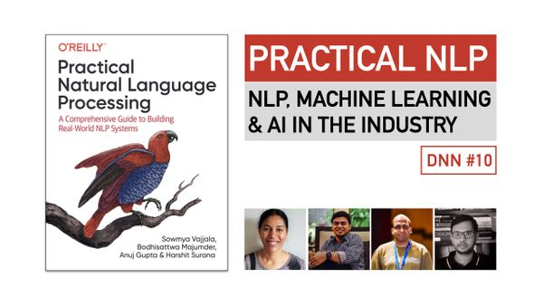
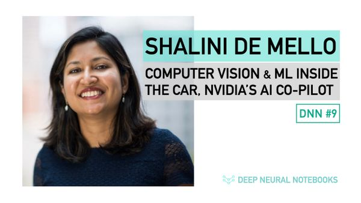
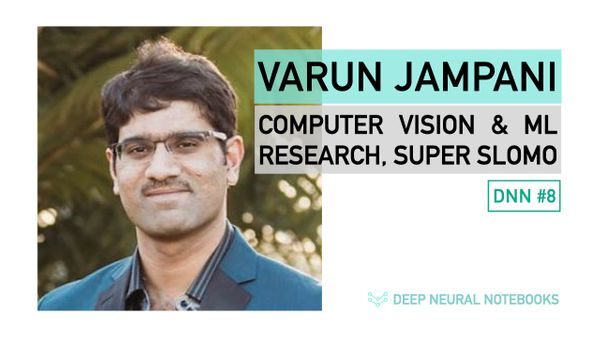

 NLP DNN 10: Practical Natural Language Processing Book | NLP, ML & AI in the Industry | GPT-3 and more a month ago • 2 min read
 Computer Vision DNN 9: NVIDIA's AI Co-Pilot , Computer Vision & ML Inside The Car // Shalini De Mello 3 months ago • 1 min read
 Computer Vision DNN 8: Computer Vision & ML Research, Super SloMo // Varun Jampani 5 months ago • 1 min read
Reinforcement Learning DNN 7: Reinforcement Learning | Research at Waymo, University of Oxford // Shimon Whiteson 5 months ago • 1 min read
Philosophy DNN 6: Spirituality, Music & The Bhagavad Gita // Srinivas Reddy 6 months ago • 1 min read
Open Source DNN 3: Data Science on the Web, Mozilla, Matplotlib, Py-odide // Mike Droettboom 10 months ago • 1 min read